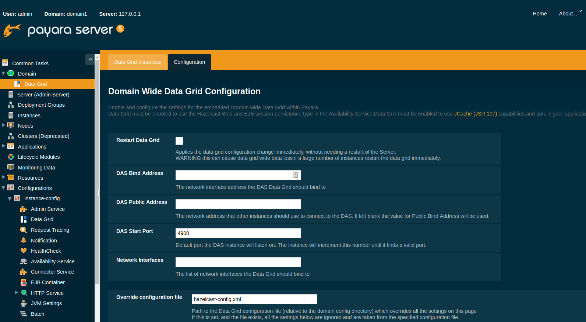

Configuring the Domain Data Grid underlying Hazelcast
- Setting a Hazelcast Configuration File
- Configuring Domain Wide Hazelcast Settings with the Admin Console
- Configuring Server Config Specfic Hazelcast Settings with the Admin Console
- Configuring Hazelcast on Domain Creation
- Configuring Config Specific Data Grid Start Port
- Configuring Hazelcast using Asadmin
Payara Server Community supports configuring Hazelcast through the Admin Console and asadmin commands. The Hazelcast configuration file can also be directly edited, but will not be covered in depth in this section.
Configuration of Hazelcast is divided into four sections. The first section applies to the whole domain, the second section applies to specific configurations and therefore to Payara Server Community instances that use that configuration, the third section covers how certain settings can be specified when a domain is created and the final section covers how to configure config specific Data Grid Start Port during or after the creation of an instance.
Using a Hazelcast configuration file will cause the settings set via the Admin Console and asadmin commands to be ignored. Any parameters not specified in the configuration file reverting to the Hazelcast defaults, even if they are specified in the Admin Console or domain.xml (Note - the Hazelcast defaults are not necessarily the same as the Payara Hazelcast defaults).
Since 4.1.2.172 Payara Server uses its
own serializer
instead of the default Hazelcast one. Setting a global serializer will not override it.
This was created to avoid a bug
that causes ClassNotFoundException errors.
|
Setting a Hazelcast Configuration File
Hazelcast configuration file can be either set using Admin Console or asadmin CLI.
Setting a Hazelcast Configuration File with the Admin Console
To set the Hazelcast configuration from a Hazelcast Configuration file:
-
Select the domain Data Grid configuration from the page tree and click the Configuration tab to view the "Hazelcast Configuration" page:
-
On the Hazelcast Configuration page, add the path to your Hazelcast Configuration file and click "Save". This path is relative to your domain configuration directory:

Setting a Hazelcast Configuration File using asadmin
The set-hazelcast-configuration command can be used to set the configuration
file:
asadmin> set-hazelcast-configuration --hazelcastconfigurationfile /path/to/fileAs with the admin console, this path is relative to your domain configuration directory.
Configuring Domain Wide Hazelcast Settings with the Admin Console
Some Hazelcast configuration settings apply to the whole domain. Navigate to the _Data Grid page for the domain wide settings.
The following configuration options are available here:
| Property | Description |
|---|---|
Restart Data Grid |
Determines if the Hazelcast member embedded in Payara will be restarted to apply any changes made |
DAS Bind Address |
Explicity specifies the IP Address the DAS should bind the Hazelcast instance to. By default, Hazelcast will try to choose the correct bind address from the IP addresses available on the host. If you find the DAS is binding to an incorrect IP Address the correct address can be specified here. |
DAS Public Address |
This is the public IP Address that the DAS should use if the DAS is behind a NAT firewall and other Payara Server Instances need to connect via the public NAT address rather than the internal IP Address |
Auto Increment Port |
By default the cluster uses the next unoccupied port that is available starting with the start port. When auto-increment is turned off an occupied start port results in a startup failure instead. |
DAS Start Port |
The port the DAS uses to run Hazelcast on. If this port is busy, the port specified will be incremented until a valid port is found. |
Network Interfaces |
Similar to DAS Bind address by default Hazelcast will choose the correct IP Address to bind to. If you find Hazelcast is binding to the incorrect address a comma separated list of IP Addresses can be specified here. |
Override Configuration File |
Specifies the Hazelcast configuration file to use. The path specified is relative to the domain config directory. If you are using a custom GlassFish server configuration for a cluster or standalone instance (e.g. cluster-config), then the Hazelcast configuration file should be placed in the directory with the same name (e.g. <domain-root>/config/cluster-config). This will ensure it is replicated to the node during startup. Using this option to point to a valid Hazelcast configuration file will cause all other options set to be ignored. Any options unset within the Hazelcast configuration file will be set to the Hazelcast defaults. |
Data Grid Group Name |
Specifies the Hazelcast group name, to be optionally used to help divide clusters into logical, segregated groups (i.e. dev-group, prod-group). |
Start Port |
The port the other Payara Server instances use to run Hazelcast on. If this port is busy, the port specified will be incremented until a valid port is found. |
License Key |
Enables Hazelcast Enterprise features. |
Host Aware Partitioning |
Whether or not to enable host-aware partitioning for the cluster. Host aware partitioning must be enabled on all members of the cluster (including Payara Micro instances) for this feature to work correctly. This is default in Payara Server 5.181 onwards for both Payara Server domains and Payara Micro instances. |
Data Grid Discovery Mode |
See Discovery Modes |
Configuring Server Config Specfic Hazelcast Settings with the Admin Console
Navigate to the Data Grid page for the specific configuration.

The following configuration options are available here:
| Property | Description |
|---|---|
Enabled |
See Disabling Data Grid for detailed information |
Restart Data Grid |
Determines if the Hazelcast member embedded in Payara will be restarted to apply any changes made |
Lite Data Grid Instance |
If set to true, cluster members with this configuration will be Hazelcast "lite" nodes, meaning they will not store any cache data locally and rely on other cluster members to store data. |
Config Specific Data Grid Start Port |
This is only available since 5.194. Sets Data Grid Start Port to the instance. If set to 0 (default) the Domain wide start port will be used instead. |
Public Address for this Data Grid Node |
The Public Address to use for this Data Grid Node. Used when the node is behind a NAT |
Instance Group |
Instance group name for all Server Instances using the configuration. Future functionality may use this name. |
Hazelcast Instance JNDI Name |
The JNDI name to bind the Hazelcast instance to. |
JCache Manager JNDI Name |
The JNDI name to bind the JCache Cache Manager to. |
JCache Caching Provider JNDI Name |
The JNDI name to bind the JCache Caching Provider to. |
Executor Pool Size |
The threadpool size for the Hazelcast Executor service |
Executor Queue Capacity |
Queue Capacity of the Data Grid Executor Service. Executions are queued until a thread is available |
Scheduled Executor Pool Size |
The threadpool size for the Hazelcast Scheduled Executor service |
Scheduled Executor Queue Capacity |
Queue Capacity of the Data Grid Scheduled Executor Service. Executions are queued until a thread is available |
Enter your required values, and click Save. Restarting the domain or instance/cluster is not necessary for any changes made to take effect, provided that "Dynamic" remains set to "true"
Configuring Hazelcast on Domain Creation
Since Payara Server 5.194 and 5.193.2
The following options can be used with the create-domain command to specify certain Hazelcast settings when a domain is created:
| Option | Type | Description | Default | Mandatory |
|---|---|---|---|---|
|
Port Number |
The port to run Hazelcast on for the DAS.
If this port is busy and auto-increment option is enabled, the port specified
will be incremented until a valid port is found. The |
4900 |
No |
|
Port Number |
The port the other Payara Server
instances use to run Hazelcast on. If this port is busy and auto-increment
option is enabled, the port specified will be incremented until a valid port is
found. The |
5900 |
No |
|
Boolean |
By default the Data Grid uses the next
unoccupied port that is available starting with the start port. When
auto-increment is turned off an occupied start port results in a startup failure
instead. The |
5900 |
No |
The following domain properties have been added to the 'create-domain' command to make it possible to configure certain Hazelcast setting when a domain is created:
| Property | Description |
|---|---|
|
This property specifies the port number of the port the
DAS use to run Hazelcast on. The |
|
This property specifies the port number of the port
the other Payara Server instances use to run Hazelcast on. The hazelcast.start.port
property is overridden by the |
|
This property specifies whether or not to use the
next unoccupied port that is available starting with the start port. When auto-increment
is turned off an occupied start port results in a startup failure instead. The
hazelcast.auto.increment property is overridden by the |
If the portbase options are used, the values for the ports of the
Hazelcast DAS start port and the Hazelcast start Port are calculated as follows:
Hazelcast DAS start port: portbase + 49 and Hazelcast start port: portbase + 59.
|
The following examples demonstrate creating a domain with all of the Hazelcast related options:
An example of create-domain command with Hazelcast specific options:
asadmin> asadmin create-domain --hazelcastdasport 7900 --hazelcaststartport 8900 --hazelcastautoincrement true testDomain
Using default port 4848 for Admin.
Using default port 8080 for HTTP Instance.
Using default port 7676 for JMS.
Using default port 3700 for IIOP.
Using default port 8181 for HTTP_SSL.
Using default port 3820 for IIOP_SSL.
Using default port 3920 for IIOP_MUTUALAUTH.
Using default port 8686 for JMX_ADMIN.
Using default port 6666 for OSGI_SHELL.
Using default port 9009 for JAVA_DEBUGGER.
Using port 7900 for Hazelcast DAS.
Using port 8900 for Hazelcast Start.
Distinguished Name of the self-signed X.509 Server Certificate is:
[CN=dev,OU=Payara,O=Payara Foundation,L=Great Malvern,ST=Worcestershire,C=UK]
Distinguished Name of the self-signed X.509 Server Certificate is:
[CN=dev-instance,OU=Payara,O=Payara Foundation,L=Great Malvern,ST=Worcestershire,C=UK]
Domain testDomain created.
Domain testDomain admin port is 4848.
Domain testDomain allows admin login as user "admin" with no password.
Command create-domain executed successfully.An example of create-domain command with Hazelcast specific domain properties:
asadmin> create-domain --domainproperties hazelcast.das.port=7900:hazelcast.auto.increment=false:hazelcast.start.port=8900 testDomain
Using default port 8080 for HTTP Instance.
Using default port 7676 for JMS.
Using default port 3700 for IIOP.
Using default port 8181 for HTTP_SSL.
Using default port 3820 for IIOP_SSL.
Using default port 3920 for IIOP_MUTUALAUTH.
Using default port 8686 for JMX_ADMIN.
Using default port 6666 for OSGI_SHELL.
Using default port 9009 for JAVA_DEBUGGER.
Using port 7900 for Hazelcast DAS.
Using port 8900 for Hazelcast Start.
Distinguished Name of the self-signed X.509 Server Certificate is:
[CN=dev,OU=Payara,O=Payara Foundation,L=Great Malvern,ST=Worcestershire,C=UK]
Distinguished Name of the self-signed X.509 Server Certificate is:
[CN=dev-instance,OU=Payara,O=Payara Foundation,L=Great Malvern,ST=Worcestershire,C=UK]
Domain testDomain created.
Domain testDomain admin port is 4848.
Domain testDomain allows admin login as user "admin" with no password.
Command create-domain executed successfully.Configuring Config Specific Data Grid Start Port
@Since Payara Server 5.194
It is possible to configure the port used by Hazelcast to bind the corresponding instance to the Data Grid by letting users set its value during or after the creation of an instance.
Configuring Config Specific Data Grid Start Port on Instance Creation
The following option can be used with the create-instance or the create-local-instance commands
to specify config Specific Data Grid Start Port when an instance is created:
| Option | Type | Description | Default | Mandatory |
|---|---|---|---|---|
|
Port Number |
Sets Data Grid Start Port to the instance. If set to 0 the Domain wide start port will be used instead |
0 |
No |
The following examples demonstrate creating an instance with --dataGridStartPort options:
An example of create-instance command:
asadmin> asadmin create-instance --dataGridStartPort 2900 --node localhost-domain1 instance1
Command _create-instance-filesystem executed successfully.
Port Assignments for server instance instance1:
OSGI_SHELL_TELNET_PORT=26666
JAVA_DEBUGGER_PORT=29009
JMS_PROVIDER_PORT=27676
HTTP_LISTENER_PORT=28080
IIOP_SSL_LISTENER_PORT=23820
ASADMIN_LISTENER_PORT=24848
IIOP_SSL_MUTUALAUTH_PORT=23920
JMX_SYSTEM_CONNECTOR_PORT=28686
HTTP_SSL_LISTENER_PORT=28181
IIOP_LISTENER_PORT=23700
The instance, instance1, was created on host localhost
Command create-instance executed successfully.An example of create-local-instance command:
asadmin> asadmin create-local-instance --dataGridStartPort 2900 --node localhost-domain1 instance2
Rendezvoused with DAS on localhost:4848.
Using DAS host localhost and port 4848 from existing das.properties for node
localhost-domain1. To use a different DAS, create a new node using create-node-ssh or
create-node-config. Create the instance with the new node and correct
host and port:
asadmin --host das_host --port das_port create-local-instance --node node_name instance_name.
Port Assignments for server instance instance2:
OSGI_SHELL_TELNET_PORT=26667
JAVA_DEBUGGER_PORT=29010
JMS_PROVIDER_PORT=27677
HTTP_LISTENER_PORT=28081
IIOP_SSL_LISTENER_PORT=23821
ASADMIN_LISTENER_PORT=24849
IIOP_SSL_MUTUALAUTH_PORT=23921
JMX_SYSTEM_CONNECTOR_PORT=28687
HTTP_SSL_LISTENER_PORT=28182
IIOP_LISTENER_PORT=23701
Command create-local-instance executed successfully.Configuring Config Specific Data Grid Start Port After Instance Creation
Config Specific Data Grid Start Port can be either set using Admin Console or asadmin CLI after an instance has been created.

Configuring Hazelcast using Asadmin
As noted in the enable Hazelcast section, the set-hazelcast-configuration
asadmin command is used to both enable/disable Hazelcast, and to
configure it. The set-hazelcast-configuration command is used to set both domain wide
and config specific settings. You can pass the --help option to the command to see
usage instructions and available arguments in your terminal, both of which
are listed below:
| Option | Type | Description | Default | Mandatory |
|---|---|---|---|---|
|
Boolean |
Enables Hazelcast. If no If no arguments are specified, defaults to true. If other options are specified, asadmin will interactively prompt for
|
true |
No |
|
Config Name |
Specifies the instance or cluster to configure. |
|
No |
|
Boolean |
Enable or disable dynamic stopping and starting of the embedded Hazelcast member. |
false |
No |
|
File Path |
The Hazelcast configuration file to
use. This path is relative to the domain config directory,
Using this option to point to a valid Hazelcast configuration file will cause all other options set to be ignored. Any options unset within the Hazelcast configuration file will be set to the Hazelcast defaults. |
|
No |
|
Port Number |
The port to run Hazelcast on for Payara Server Instances. If this port is busy, the port specified will be incremented until a valid port is found. |
5900 |
No |
|
IP Address |
This is the public IP Address that the DAS should use if the DAS is behind a NAT firewall and other Payara Server Instances need to connect via the public NAT address rather than the internal IP Address |
None |
No |
|
IP Address |
Explicity specifies the IP Address the DAS should bind the Hazelcast instance to. By default, Hazelcast will try to choose the correct bind address from the IP addresses available on the host. If you find the DAS is binding to an incorrect IP Address the correct address can be specified here. |
None |
No |
|
Port Number |
The port to run Hazelcast on for the DAS. If this port is busy, the port specified will be incremented until a valid port is found. |
4900 |
No |
|
IP Address |
The Public Address to use for this Data Grid Node. Used when the node is behind a NAT |
None |
No |
|
IP Addresses |
Similar to DAS Bind address by default Hazelcast will choose the correct IP Address to bind to. If you find Hazelcast is binding to the incorrect address a comma separated list of IP Addresses can be specified here. |
None |
No |
|
Group Name |
Specifies the Hazelcast group name, to be optionally used to help divide clusters into logical, segregated groups (i.e. dev-group, prod_group). |
No |
|
|
Boolean |
Whether or not to enable host-aware partitioning for the cluster. Host aware partitioning must be enabled on all members of the cluster (including Payara Micro instances) for this feature to work correctly. |
false |
No |
|
Hazelcast License |
Enables Hazelcast Enterprise features. |
No |
|
|
Cluster Mode |
Can be one of |
None |
No |
|
Multicast Address |
The multicast group for
communications in the Hazelcast instance if |
224.2.2.3 |
No |
|
Port Number |
The multicast port for communications in the Hazelcast
instance if |
54327 |
No |
|
IP Addresses |
Comma separated list of |
None |
No |
|
Boolean |
Sets the cluster to lite mode, where it will cluster but not store any cluster data. |
false |
No |
|
Port Number |
Sets Data Grid Start Port to the instance. If set to 0 the Domain wide start port will be used instead. |
0 |
No |
|
JNDI Name |
Specifies the JNDI name to bind the Hazelcast instance to. |
||
|
JNDI Name |
Specified the JNDI name to bind the JCache Caching provider |
||
--cachingproviderjndiname |
JNDI Name |
The JNDI name to bind the JCache Caching Provider to. |
||
--executorpoolsize |
Integer |
The threadpool size for the Hazelcast Executor service |
||
--executorqueuecapacity |
Integer |
Queue Capacity of the Data Grid Executor Service. Executions are queued until a thread is available |
||
--scheduledexecutorpoolsize |
Integer |
The threadpool size for the Hazelcast Scheduled Executor service |
||
--scheduledexecutorqueuecapacity |
Integer |
Queue Capacity of the Data Grid Scheduled Executor Service. Executions are queued until a thread is available |
||
--membername |
String |
Member name |
instance name |
|
--membergroup |
String |
Instance group name for all Server Instances using the configuration. Future functionality may use this name. |
config name |
|
--encryptdatagrid |
Boolean |
Enables or disables encryption of data stored in the data grid store using a key created using the |
false |
No |
|
Displays the help menu. |
false |
No |
The following example demonstrates setting all of the options on a cluster called cluster1:
asadmin> set-hazelcast-configuration --enabled=true --target=cluster1 --dynamic=true -f hazelcast-config.xml --startport=5902 -g 224.2.2.3 --multicastport=6666 --clustermode multicast --hostAwareParitioning=true -j payara/Hazelcast